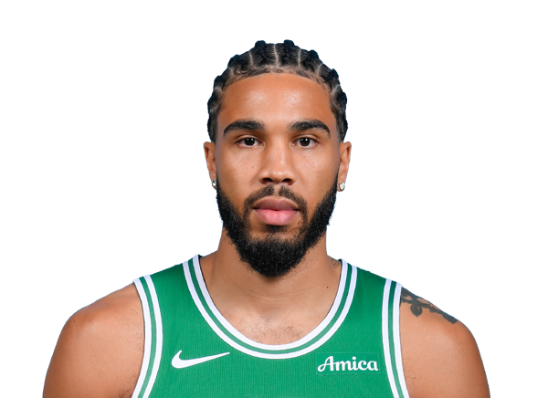

BASKETBALLKEEP
Dynasty · Redraft · Hardwood

SF · BOS
Jayson Tatum
Keep #70
Board #61
Age 28
3,842 BK Value
Plus
- Elite scoring. This is a 25-plus nights player in points leagues too.
- Elite threes. Volume from deep is the extra category.
- Helps in assists. Enough dimes to keep the column honest.
- Helps free-throw %. The line is not a leak.
Minus
- Turnovers run high. Pair him with safe handles.
Boards
Where the boards put him
High 9 · low 74.
| Board | Rank |
|---|---|
| FantasyPros Dynasty ECR | 9 |
| The Athletic | 61 |
| Late-Round Fantasy | 61 |
| Basketball Monster Cats | 63 |
| CBS Sports | 63 |
| BBall-Index | 63 |
| Hashtag Basketball Dynasty | 66 |
| KeepTradeCut NBA | 66 |
| Hashtag Points | 68 |
| Fanspo Dynasty | 68 |
| Razzball | 68 |
| Draft Sharks NBA | 68 |
On the wire
Why the simmering Jaylen Brown and Jayson Tatum feud is good for the NBA -- and the 76ers-Celtics rivalry
Whatever it is, the Brown and Tatum drama will be must-see TV when the Sixers and Celtics square off
Jaylen Brown Jayson Tatum
Celtics injury report against Nets reveals great health news
Jayson Tatum, Paul George, and Mitchell Robinson are all not on the injury report despite Tuesday’s Celtics game being on the second…
Mitchell Robinson Jayson Tatum Paul George
Jaylen Brown responds to Jayson Tatum's 'no beef' comments as dispute continues: 'might be a little lamb…
Jaylen Brown and Jayson Tatum can’t stop talking about their relationship
Jaylen Brown Jayson Tatum Donovan Clingan
All players · The Keep · The Board · BK News · Calculator